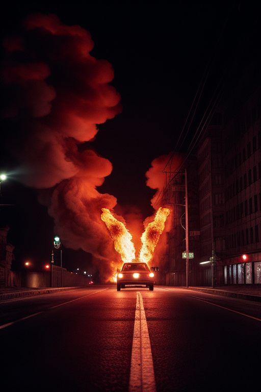
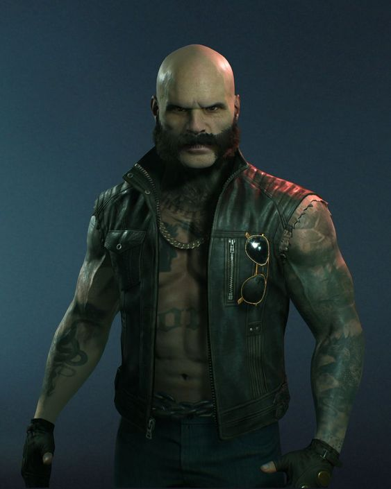
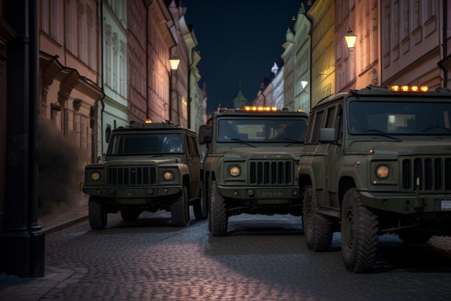

Praga trema
Diversi agenti di polizia coinvolti

Intorno alle 5:00 del 3 gennaio i sismografi della regione hanno registrato una violenta ma brevissima scossa di
terremoto in pieno centro città. Nonostante l'enorme intensità sismica rilevata, la durata dell'evento è stata di
per sé molto breve, evitando ingenti danni strutturali. Purtroppo, per un colpo di sfortuna, due furgoni della polizia
di Praga stavano attraversando l'epicentro dell'evento e si sono inabissati nelle crepe che si sono create sull'asfalto,
togliendo la vita agli otto agenti di pattuglia accorsi in zona per sedare quello che è stato definito dagli avventori
del noto locale Nocturnal, come una rapina a mano armata. Il Ministero della Difesa esprime il suo più sentito
cordoglio per le vittime del malaugurato disastro e promette chiarezza sugli eventi che hanno coinvolto il night
club della famosa Nadezda Jakovlevna, curatrice culturale del Museo Nazionale di Praga.
buttafuori del famoso locale noc u tynske ucciso da un cecchino
La polizia ha rivelato solo dopo due giorni dall'accaduto l'identità dell'uomo che è stato trovato morto
appena fuori dal locale del magnate Tynske Masaryk, il Noc u Tynske. Si tratta di Arnost Basinski, uno dei
buttafuori regolarmente assunti dal Signor Masaryk per garantire con professionalità la tranquillità della
movida notturna che ogni notte affolla Piazza Jakubska. Con un comunicato stampa ufficiale sono state
rilasciate alcune dichiarazioni che vanno a confermare il clima di tensione e gli alti livelli di criminalità
che stanno soffocando la città di Praga in questo turbolento inizio del nuovo decennio.
Stando a quanto comunicato, il colpo mortale è stato esploso a diverse centinaia di metri e, secondo la
traiettoria d'impatto del proiettile di alto calibro, l'assassino doveva trovarsi su una delle terrazze degli
edifici che circondano la piazza. Le forze dell'ordine si sono subito mobilitate per arrestare l'esecutore
dell'efferato omicidio ma ad oggi non sono stati rilasciati ulteriori dettagli. Un bossolo vuoto, calibro .50, è stato
rinvenuto fra le crepe del terrazzo da cui è partito il colpo ma a parte il modello dell'arma che l'ha
esploso, ancora non si conoscono ulteriori dettagli.

numerosi presidi militari nei punti sensibili della città
Sono ormai passate 24 ore da quando numerose forze di polizia militare hanno stabilito dei presidi nei maggiori
punti nevralgici e sensibili della città di Praga. Sono stati avvistati distaccamenti alla Stazione Centrale, presso
il Frantishku Memorial, due distaccamenti a presidio del Castello di Praga e diverse segnalazioni dei cittadini
riferiscono che la presenza dei militari è aumentata esponenzialmente per tutte le strade principali della città.
La situazione viene vissuta con timore da parte della cittadinanza che teme il ritorno a quei tempi non troppo lontani
in cui aleggiava il terrore anche solo ad uscire dalle proprie abitazioni. Il Governo non ha ancora fornito alcuna
spiegazione ufficiale limitandosi a cercare di tranquillizzare la popolazione riferendo che si tratta esclusivamente
di semplici esercitazioni che a partire da quest'anno avranno una cadenza biennale, il tutto per garantire, citiamo, "che
il corpo militare sia sempre pronto ed efficiente nella difesa dei cittadini di Praga". Considerati gli ultimi eventi
che hanno sconvolto la città, è plausibile pensare che le esercitazioni abbiano anche uno scopo di deterrenza per la
violenza che sembra dilagare in questo turbolento inizio del 1990.
